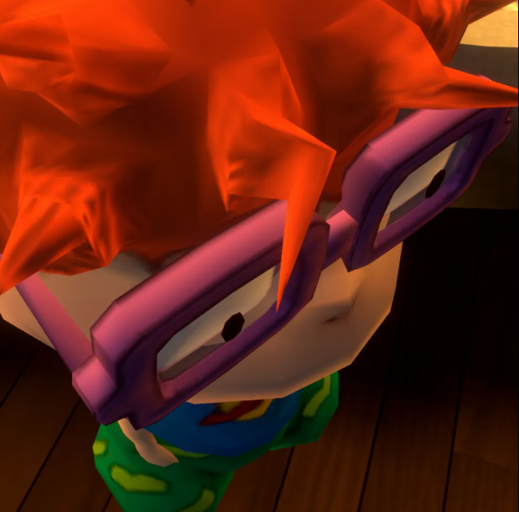
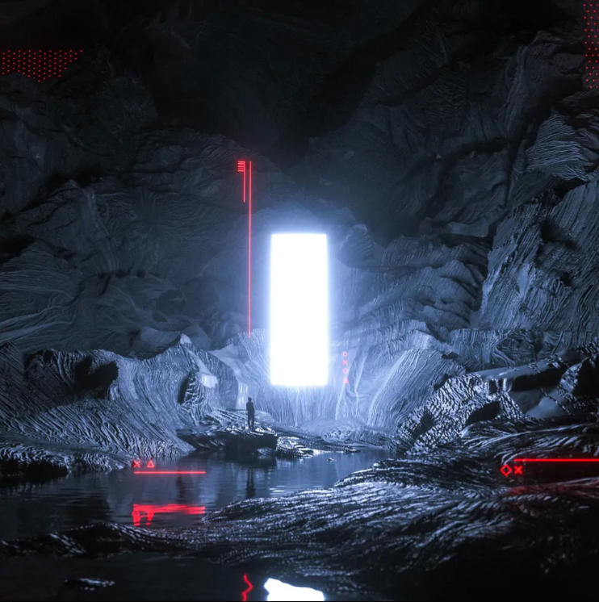
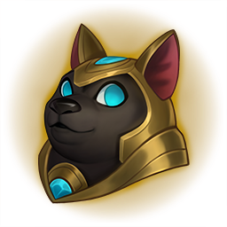
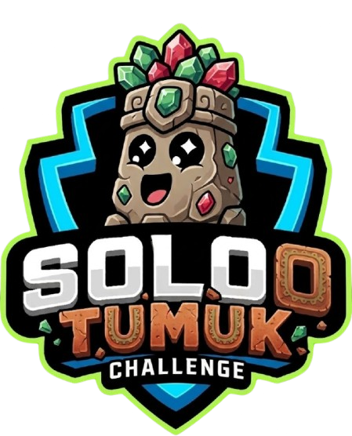

👑

Ganador del SoloTumuk
Feik
Caballo Negro

Pollo
Mayor Racha de Victorias
Feik
9 victorias seguidas
Mejor Winrate
Feik
63% WR
Mejor OTP
Feik
Viego (72% Winrate)
Jugador con más partidas

Emhil
107 partidas
Día más activo

Domingo 16
Todos jugaron al menos 1 partida
Decepción del torneo
Emhil
Mayor racha de derrotas
Emhil
19 derrotas seguidas